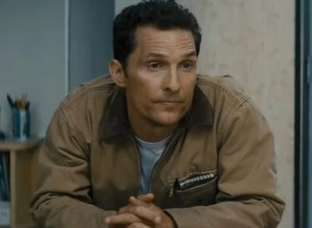
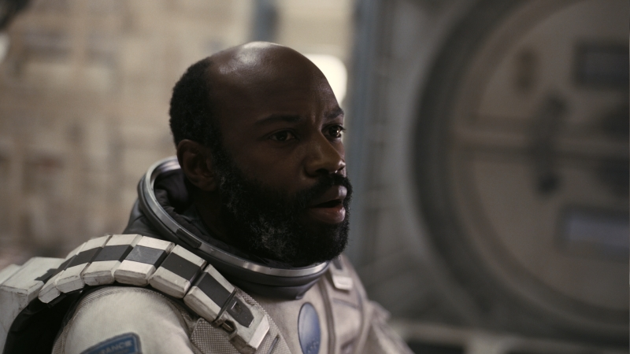
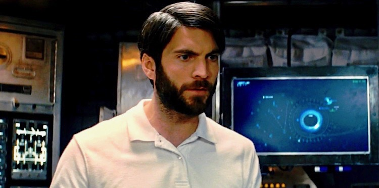
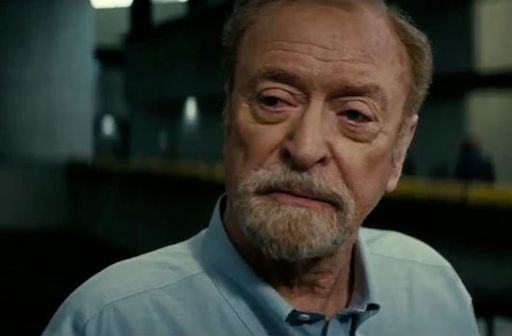

|
 Joseph Coopermainly refered to as "Coop" or "Cooper", played by Mathew McConaughey, is a trained NASA pilot, who lived a quiet life as a farmer with his two kids until he was called back to action to save humanity. |
Dr. Amelia Brandplayed by Anne Hathaway is the chief scientist and biologist of the crew. She is also the daughter of Professor John Brand. |
 Romillyplayed by David Gyasi, is a physicist aboard the crew. Despite being extremely fearful of space travel, he is eager to adventure and uncover the mysteries of the universe. |
 Doyleplayed by Wes Bentley is the geographer of the crew. While him and Cooper often disagree, he is also a admirable pilot. |
 Professor John Brandplayed by Michael Caine, has spent a significant portion of his life dedicated to solving the gravity equation, and establishing humanities 2 plans for survival. |